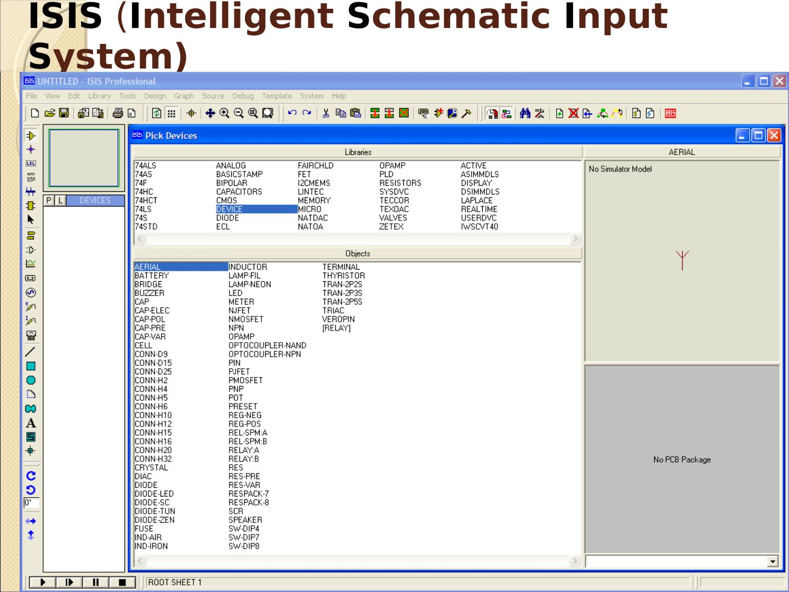
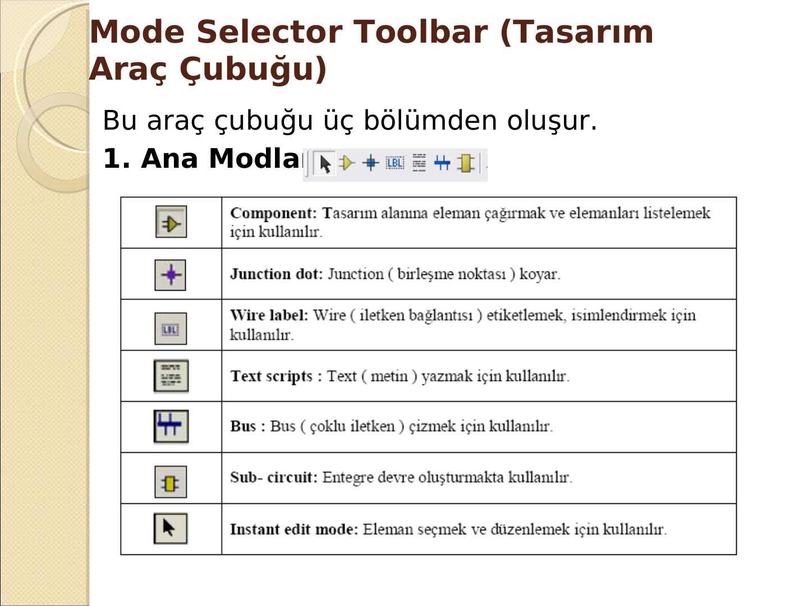

· EEM214
EEM214 Elektronik I: Proteus (ISIS/ARES) Temel Bilgiler Sunumu, Menüler ve Araç Çubukları (cobanoglu.wikispaces.com)
EEM214 – Elektronik I · 22.02.2012 · 16.10.2026
Bu yazı, EEM214 Elektronik I dersinin klasöründe bulunan 47 slaytlık Türkçe "Bilgisayar Destekli Tasarım II – Proteus (ISIS/ARES)" sunumunu aktarıyor. Sunum, son slayttaki kaynakçaya göre cobanoglu.wikispaces.com sitesindeki "mesleki yazılım" sunumundan alınmış; bir meslek lisesi ya da meslek yüksekokulu dersi için hazırlandığı anlaşılıyor. Klasörde aynı sunumun kaynakça slaytı olmayan bir kopyası (PROTEUS_TUTORIAL.ppt) da vardı. EEM214 ve EEM311 raporlarında simülasyonlar sık sık Proteus ile yapıldığı için derste referans olarak kullanılmış olmalı. Sunum yazının sonunda indirilebilir.
Bu içerik üçüncü taraf bir kaynağa aittir; arşiv ve nostalji amacıyla kaynak belirtilerek paylaşılmıştır. Hak sahibinin talebi hâlinde kaldırılır.
Bilgisayar destekli tasarım ve Proteus
Bilgisayarların yaygınlaşmasıyla teknik alanlarda çizim programları kullanılmaya başlandı. Çizim, simülasyon ve analizin üçünü birden yapabilen sayılı yazılımlar arasında Proteus (ISIS-ARES), Micro-Cap, MicroSim PSpice, OrCAD PSpice, DesignLab, Electronics Workbench (EWB), Multisim, Ultiboard, Ulticap ve BoardMaker sayılabilir.
Bilgisayar destekli tasarımın avantajları: Gerçek laboratuvarda eleman temini, istenen özellikte eleman bulamama, arızalı eleman, uygun ölçü cihazı temini ve kaza/arıza riskleri her zaman vardır; sanal laboratuvar bunları ortadan kaldırır ve gerçek ortamda yapılamayacak hesap ve ölçümleri hassas biçimde yapmayı sağlar. Maliyet: gerçek bir elektronik laboratuvarı kurmak pahalıdır. Zaman: devreyi çizmek, kurmak, test etmek, malzeme listesi çıkarmak ve baskı devreye aktarmak çok kısa sürer.
Proteus nedir? Labcenter Electronics firmasının ürünü olan Proteus, elektronik devrelerin görsel simülasyonunu yapabilen; devre çizimi, simülasyon, animasyon ve PCB çizimi programıdır. Klasik "workbench" programlarından en önemli farkı mikroişlemcilere yüklenen .HEX dosyalarını da çalıştırabilmesidir. Bir sanal laboratuvar gibi, devre elemanlarının değerlerini değiştirip yeniden çalıştırmaya, elektriksel hata raporu ve düzenli malzeme listesi almaya olanak tanır.
Proteus ile yüklenen dosyalar: Proteus VSM Model Help (kütüphanedeki elemanların kullanımı), ARES 7 Professional (baskı devre çizimi) ve yardımı, ISIS 7 Professional (devre çizim, simülasyon ve animasyon) ve yardımı, License Manager, ProSPICE Help, Read Me ve Sample Designs (örnek uygulamalar).
ISIS çalışma alanı
ISIS (Intelligent Schematic Input System), Proteus'un devre çizim, simülasyon ve analiz programıdır ve Proteus'un temelini oluşturur. Pencerede en üstte başlık çubuğu, altında menü çubuğu ve araç çubukları (File, View, Edit, Design; View → Toolbars ile açılıp kapatılır), solda tasarım araç çubuğu (Mode Selector), altta yön araç çubuğu (Orientation) ve animasyon kontrol paneli bulunur. Tasarım alanı ön görünüş penceresi çalışmanın küçültülmüş hâlini gösterir; durum çubuğu ve koordinat göstergesi kullanıcıyı bilgilendirir.

ISIS dosya uzantıları: .DSN (tasarım dosyası, asıl çalışma dosyası), .DBK (yedek), .SEC (bölüm), .MOD (modül), .LIB (kütüphane), .SDF (netlist).
Araç çubukları
- Mode Selector (tasarım araç çubuğu): üç bölümden oluşur: ana modlar (Component ile eleman çağırma, Junction dot, Wire label, Text script, Bus, Sub-circuit, Instant edit), "gadget"lar ve iki boyutlu grafik çizim araçları.
- File, View, Edit (düzen) ve Design araç çubukları.
- Orientation (yön) araç çubuğu: döndürme ve yansıtma (ayna).
- Animation Control Panel: Play (devreyi çalıştırır), Step (adım adım çalıştırır), Pause (ara verir), Stop (durdurur).

Menüler
- File: Import Bitmap (BMP ekleme), Import/Export Section (çalışmanın bir bölümünü kaydedip başka çalışmalara alma), Export Graphics (resim olarak kaydetme), Set Area (yazdırılacak bölüm).
- View: görünüm ve ızgara ayarları (1000 th = 1 inç = 2.54 cm).
- Edit: Find and Edit Component, Send to Back (Ctrl+B), Bring to Front (Ctrl+F), Tidy (kullanılmayan elemanları listeden siler).
- Library: Pick Device/Symbol (P), Make Device, Make Symbol, Packaging Tool, Store Local Object, Decompose, Compile to Library, Autoplace Library, Verify Packaging, Library Manager.
- Tools: Real Time Annotation, Real Time Snap, Wire Auto Router (W), Search and Tag, Property Assignment Tool (A), Global Annotator, ASCII Data Import, Bill of Materials, Electrical Rule Check, Netlist Compiler, Model Compiler, Netlist to ARES, Backannotate from ARES.
- Design: Edit Design Properties (başlık, doküman no, revizyon, yazar), Edit Sheet Properties, New/Remove/Goto Sheet, Zoom to Child, Exit to Parent, Root Sheet.
- Graphs: Edit Graph, Add Trace, Simulate Graph, View Log, Export Data, Clear Data, Conformance Analysis.
- Source: programlanabilir entegrelerin (8051, PIC) kaynak kodları için Add/Remove Source Files, Define Code Generation Tools, Setup External Text Editor, Build All.
- Debug: Start/Restart Debugging, Pause (Pause tuşu), Stop (Shift+Break), Execute, Execute Without Breakpoints, Execute for Specified Time, Step Over (F10), Step Into, Step Out, Step To, Reset Popup Windows, Reset Persistent Model Data (EPROM/EEPROM içeriği), Use Remote Debug Monitor, Tile Horizontally/Vertically; devre çalışırken Simulation Log ve Watch Window.
- Template: Set Design Defaults (tasarım alanı ve animasyon renkleri, varsayılan yazı tipi), Set Graph Colours, Set Graphics Styles, Set Text Styles, Set Graphics Text, Set Junction Dots.
- System: System Info, Update Manager, Text Viewer, Set BOM Scripts, Set Environment (otomatik kaydetme süresi, geri alma adımı, ipucu gecikmesi, ARES ile eşitleme), Set Paths, Set Property Definitions, Set Sheet Sizes, Set Text Editor, Set Keyboard Mapping, Set Animation Options (simülasyon hızı, gerilim/akım aralıkları, pin lojik durumları ve akım yönlerinin gösterimi), Set Simulator Options (tolerans, MOSFET bölge değerleri, sıcaklık, gecikme), Save Preferences.
- Help: ISIS Help (F1), Proteus VSM Help, Proteus VSM SDK, Sample Designs, Stop Press (sürüm notları), About ISIS.
İndirme
Sunumun orijinal PowerPoint dosyası ve PDF kopyası yazının sonunda indirilebilir.